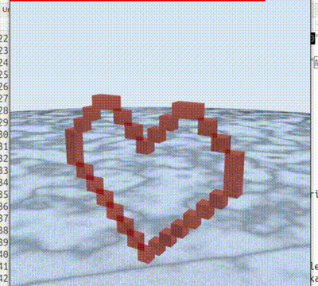

Today was my first day at the Recurse Center hub, and I decided to join in a Creative Coding session. The various sessions are open to anyone, and as I’d felt a bit of envy for folks with projects to work on with an artistic theme, I figured this would be a great way to fulfill that need.
The brief today was “everybody’s got a hungry heart”, a lyric from the Bruce Springsteen song. I decided to keep life simple and just use the heart element. We had 2 hours to code something, anything we liked, and then had the opportunity to present it to the group.
I’ve heard a lot of people talk about raytracing and if I’m honest I have no idea what it is, other than for creating 3D graphics and maps. I remember when a lot of folks in the R community were getting super excited about the rayrender package, and I’d never got round to giving it a go, so this seemed like a great opportunity.
I’ll be honest here, I spent the first 20ish minutes of the workshop installing packages that needed to have their C++ compiled. This isn’t a complaint - how could I complain about that, given I help maintain arrow - though it’s made me appreciate the use of binaries, and I’ll probably go update my setup to go pull these from the Posit Package Manager repo with precompiled Linux binaries in future.
I originally wanted to recreate something with contour lines and neon effect, but this began to prove tricky, and with limited time I just customised an example which drew a sword to instead draw a heart. I’ll walk through the code part by part below.
The first step is to draw the heart shape. If you squint at the matrix below, you should be able to make out a heart drawn in 1s amongst all the 0s.
library(rayrender)
heart <- matrix(c(
0,0,0,1,1,0,0,0,0,0,1,1,0,0,0,
0,0,1,0,0,1,0,0,0,1,0,0,1,0,0,
0,1,0,0,0,0,1,0,1,0,0,0,0,1,0,
1,0,0,0,0,0,0,1,0,0,0,0,0,0,1,
1,0,0,0,0,0,0,0,0,0,0,0,0,0,1,
1,0,0,0,0,0,0,0,0,0,0,0,0,0,1,
0,1,0,0,0,0,0,0,0,0,0,0,0,1,0,
0,0,1,0,0,0,0,0,0,0,0,0,1,0,0,
0,0,0,1,0,0,0,0,0,0,0,1,0,0,0,
0,0,0,0,1,0,0,0,0,0,1,0,0,0,0,
0,0,0,0,0,1,0,0,0,1,0,0,0,0,0,
0,0,0,0,0,0,1,0,1,0,0,0,0,0,0,
0,0,0,0,0,0,0,1,0,0,0,0,0,0,0,
0,0,0,0,0,0,0,0,0,0,0,0,0,0,0,
0,0,0,0,0,0,0,0,0,0,0,0,0,0,0), 15, 15, byrow = TRUE)Next I generate the ground. I decided I wanted a black and white background, so set the colours accordingly.
scene = generate_ground(
depth=0,
spheresize=1000,
material=diffuse(color="#000000", noise=1/10, noisecolor = "#ffffff")
) %>%
add_object(sphere(x=-60,y=55,radius=40, material=diffuse()))I then create individual cubes based on the values in my matrix which are filled in with 1.
for(i in 1:ncol(heart)) {
for(j in 1:nrow(heart)) {
if(heart[j,i] == 1) {
colorval = "#be2e1b"
material = metal(color=colorval,fuzz=0.1)
scene = add_object(scene,cube(y=16-j,z=i-4, material=material))
}
}
}Finally, I plot the scene!
par(mfrow=c(1,1))
render_scene(scene,fov=30, width=500, height=500, samples=500,
parallel=TRUE, lookfrom=c(-25,25,0), lookat = c(9,9,0))This is closely copied from the tutorial, and doesn’t quite render as centered as I need, so I’ll probably come back and edit this blog post with an update once I get to know the code a bit better.
I’m pretty happy with this though - creating something from scratch in 2 hours when learning a new library is tough, and while the end result took about 15 minutes, the prior research was needed to work out what was and wasn’t feasible in the time!

It was great to demonstrate cool things in R too - lots of people saw R as something they’d used in grad school for statistics, and didn’t realise the full extent of possibilities. Going from a matrix of 1s and 0s to a 3D scene was a pretty powerful demo too!
I’m loving Recurse Center so far, and will be updating with more posts like this as I go along!